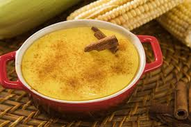
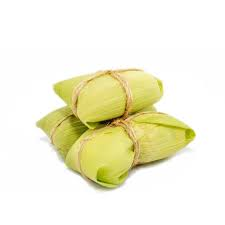

Comidas Típicas de São João
As comidas juninas são uma das partes mais importantes da festa, quase todas feitas com milho, mandioca e amendoim.
Canjica
Pamonha
Bolo de Milho

Milho Cozido

Pé de Moleque

Cocada